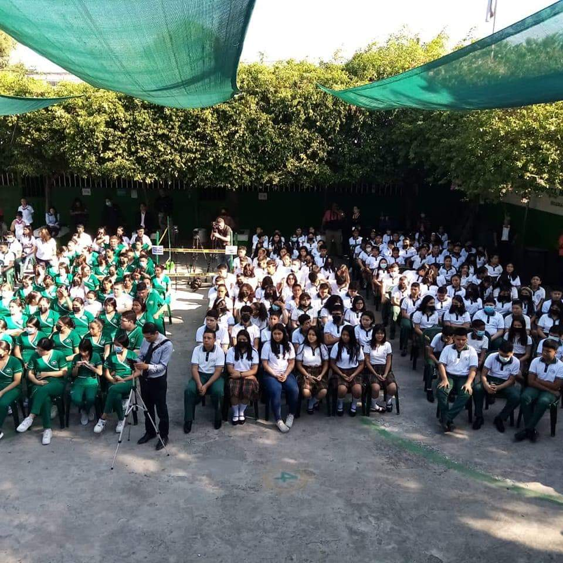
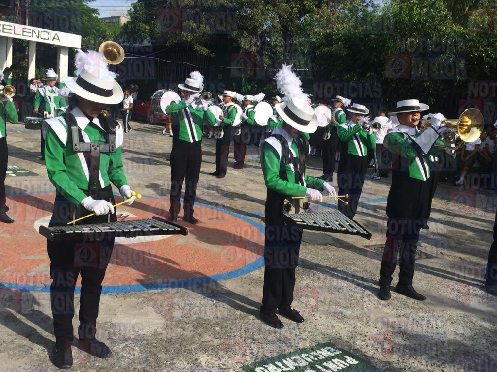
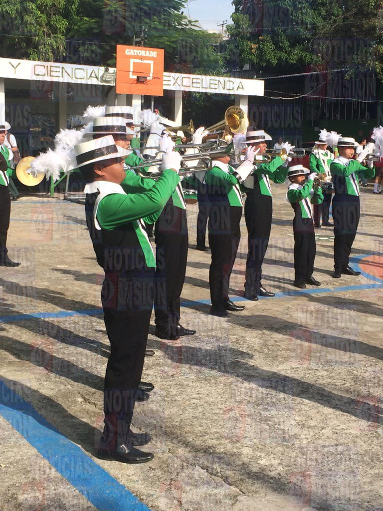
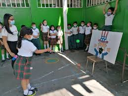

Requisitos para
aplicar a nuestro colegio:
-
Llenar la Solicitud de Ingreso que aparece en la parte superior de este sitio web.
-
Documentos requeridos: Partida de nacimiento: Una copia certificada de la partida de nacimiento del estudiante.
Fotografías: Algunas escuelas solicitan fotografías recientes del estudiante.
Historial académico: Si el estudiante ha asistido a otros colegios, se puede requerir el historial académico o boletines de calificaciones anteriores.
-
Entrevista o evaluación: Es posible que se realice una entrevista con los padres y/o el estudiante para conocer más sobre su personalidad, intereses y motivación para ingresar al colegio.
-
Prueba de nivel: Dependiendo del grado al que se postule, podría ser necesario realizar una prueba de nivel en áreas como matemáticas, lenguaje o ciencias.
-
Pago de matrícula: Por último, se suele requerir el pago de una matrícula para asegurar el cupo del estudiante.
-
Deberán
presentar constancia de sueldo reciente.
Te compartimos un poco sobre el ambiente y actividades que desarrollamos con nuestros estudiantes



